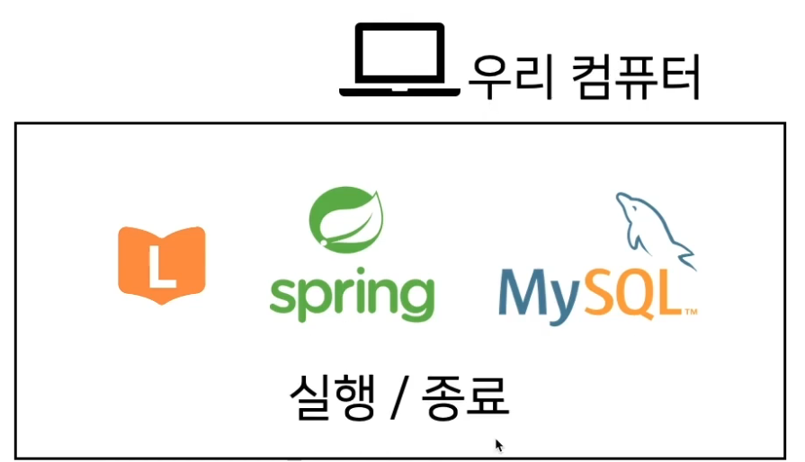
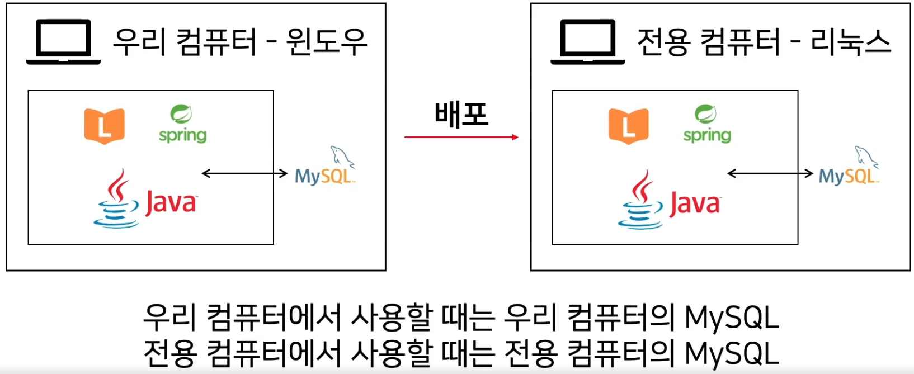
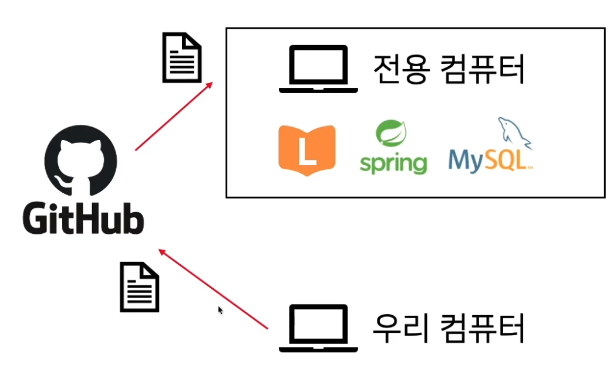

생애 최초 배포 준비하기
목표
배포가 무엇인지 이해하고 배포를 하기 위해 어떤 준비를 해야하는지 알아본다.
스프링 서버를 실행할 때 DB와 같은 설정들은 코드 변경없이 제어하는 방법
git과 github의 차이를 이해하고 git에 대한 기초적인 사용법을 알아본다.
AWS의 EC2가 무엇인지 이해하고, AWS를 통해 클라우 컴퓨터를 빌려본다.
배포
최종 사용자에게 SW를 전달하는 과정

우리 컴퓨터에 우리가 작성한 코드, 스프링, MySQL등이 모두 있습니다.
우리 컴퓨터는 24시간 실행되지 않고, 애플리케이션만 돌아가는게 아니라 동영상 재생, 인터넷, 기타 작업들도 같이하기에 적합하지 않다.
그래서 24시간 애플리케이션만 돌아가는 전용 컴퓨터에 우리 작업물을 옮겨서 실행하는 것. 을 배포라고 합니다.
profile과 H2 DB

우리 컴퓨터에서 데이터를 저장할 때는 우리 컴퓨터에 설치된 MySQL과 통신을 해야합니다.
전용 컴퓨터에서 데이터를 저장할 때는 전용 컴퓨터에 설치된 MySQL과 통신을 해야합니다.
똑같은 코드이지만 우리 컴퓨터 환경에서는 우리 MySQL을 사용하고, 전용 컴퓨터 환경에서는 전용 컴퓨터의 MySQL을 사용할 수 있도록 실행될 때 설정을 다르게 하고 싶습니다.
여기서 profile 개념이 등장합니다. 실행될 때 설정을 다르게 하고 싶다는 것입니다.
설정은 지금은 DB이지만, 외부 API나 또 다른 다양한 기능을 사용해야할 때 환경마다 다른 설정을 해야합니다.
똑같은 서버 코드를 실행하지만, LOCAL개발 단계일 때는 H2 DB 를 사용하고, 배포전일때는 dev라는 profile을 입력하여 MySQL DB를 사용하도록 합니다.
USER키워드를 예약어에서 제외하도록 하는 명령어입니다.
git/github

클라우드 컴퓨터도 결국은 서버 전용 컴퓨터이니 우리가 github 원격 버전 관리 프로그램에 최신 코드를 올리면 서버는 자동으로 알아서 트리거만 동작하게 하면 알아서 서버가 재시작할 수 있도록합니다.
이렇게 되면 우리가 로컬에 가진 코드를 복사해서 전용 컴퓨터에 옴기는 작업보다 원격에 있는 데이터를 받아서 전용 컴퓨터에서 사용하는게 훨씬 안전한 방식입니다.